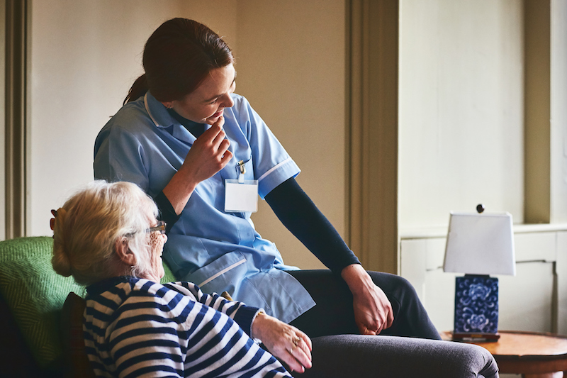

Our mission
Our mission is to help people stay independent, less isolated and more confident at home and in the community.
About us
Badwi Care and Companionship Service provides warm, practical support for adults and older people who would benefit from company, everyday help and family reassurance.
At Badwi Care and Companionship Service, we are dedicated to helping you live independently, comfortably, and confidently in your own home. Whether you need everyday assistance or specialised care, our experienced team provides high-quality home care services throughout London.
We take the time to understand your individual needs and create flexible care plans tailored to your lifestyle and preferences. With compassionate support you can trust, we're here to promote your well-being, maintain your independence, and enhance your quality of life.
Contact Badwi Care and Companionship Service today to discuss how we can support you or your loved one. Together, we can make home an even safer, happier, and more nurturing place to live.

Our mission is to help people stay independent, less isolated and more confident at home and in the community.
We provide non-regulated companionship and practical support, including sitting service, games and social activities, meal preparation, cleaning, shopping, appointment support and wellbeing checks.
Our values
Friendly support that helps people feel listened to, valued and comfortable.
Clear communication, dependable visits and practical help families can plan around.
A dignified approach that supports choice, independence and daily routines.
Encouragement with everyday activities, community access and settling back home.
Helpful updates for family members, especially when they cannot always be nearby.
Clear support options without complicated language or unnecessary pressure.
We can discuss companionship, daily support, hospital discharge support or family reassurance.